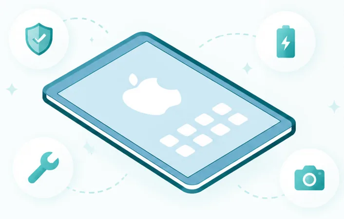

Tablet Repairs
Professional iPad & Apple Tablet Repairs

Book professional iPad repairs in Brisbane for cracked glass, touch faults, LCD display issues, battery problems, USB-C or Lightning charging issues, camera faults and water damage checks.
TECHM8 helps Brisbane customers with Apple iPad screen repair, touch repair, LCD display repair, battery replacement, charging port repair, camera repair, button faults, speaker issues and water damage assessment.
Content reviewed by: TECHM8 repair team · Last updated: 1 August 2026
iPad repair services available at TECHM8
- iPad touch repair, digitizer repair, cracked glass touch repair and unresponsive touch checks.
- iPad LCD repair, display replacement, black screen, lines, backlight and image fault checks.
- iPad battery replacement, no-power checks, overheating diagnosis and swelling assessment.
- iPad USB-C port repair, Lightning port repair, charging dock repair and no-charge diagnosis.
- iPad housing, button, camera, lens, speaker and microphone fault support.
- iPad water damage assessment, board-level symptoms, Wi-Fi issues, boot loops and general diagnostics.
iPad models we can assess and repair
iPad Pro
iPad Pro 13-inch (M5), iPad Pro 11-inch (M5), iPad Pro 13-inch (M4), iPad Pro 11-inch (M4), iPad Pro 12.9-inch (6th generation), iPad Pro 11-inch (4th generation), iPad Pro 12.9-inch (5th generation), iPad Pro 11-inch (3rd generation), iPad Pro 12.9-inch (4th generation), iPad Pro 11-inch (2nd generation), iPad Pro 12.9-inch (3rd generation), iPad Pro 11-inch, iPad Pro 12.9-inch (2nd generation), iPad Pro (10.5-inch), iPad Pro (9.7-inch), iPad Pro (12.9-inch).
iPad Air
iPad Air 13-inch (M4), iPad Air 11-inch (M4), iPad Air 13-inch (M3), iPad Air 11-inch (M3), iPad Air 13-inch (M2), iPad Air 11-inch (M2), iPad Air (5th generation), iPad Air (4th generation), iPad Air (3rd generation), iPad Air 2 and iPad Air.
iPad mini
iPad mini (A17 Pro), iPad mini (6th generation), iPad mini (5th generation), iPad mini 4, iPad mini 3, iPad mini 2 and iPad mini.
iPad
iPad (A16), iPad (10th generation), iPad (9th generation), iPad (8th generation), iPad (7th generation), iPad (6th generation), iPad (5th generation), iPad (4th generation), iPad (3rd generation), iPad 2 and iPad.
Local iPad repair support near Brisbane
Customers searching for iPad repair near me can use TECHM8 store pages for local booking and directions.
iPad repair FAQs
What iPad repairs does TECHM8 offer?
TECHM8 can assess touch repair, LCD repair, screen replacement, battery replacement, charging port repair, camera faults, audio faults, button issues, housing damage and water damage checks.
Can TECHM8 repair all iPad model families?
TECHM8 can assess iPad Pro, iPad Air, iPad mini and standard iPad models. Parts availability depends on the exact model, generation, colour and fault.
Do I need iPad touch repair or LCD repair?
Touch faults usually affect tap, swipe or digitizer response. LCD faults usually show image problems such as lines, black display, pressure marks or backlight issues.
Can I book an iPad repair online?
Yes. Use the Book a repair button to submit your device model, fault and contact details, or use Find a store to choose a nearby TECHM8 location.
How long does an iPad screen replacement take?
Some iPad screen, touch or battery repairs can be completed the same day when parts are available. Other models or damaged devices may take 1-2 business days depending on the fault and part availability.
Do you repair iPad charging ports?
Yes. Charging problems can come from USB-C or Lightning port damage, dust, cable issues, battery faults or deeper board faults. A technician can inspect the device.
Will I lose my data during repair?
Most standard screen, touch, LCD and battery repairs do not require data removal, but damaged devices always carry risk. Back up your iPad first if possible.
Do you use genuine Apple parts or high-quality equivalents?
Part options depend on the iPad model, generation and availability. TECHM8 can explain the available repair part option before you approve the repair.